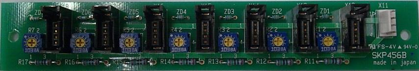
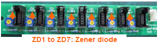
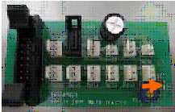
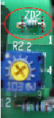
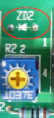

Warranty Parts Requisition Record
Reference No: S0388
Customer: KG ; demo system
Handler Model: NS-8040
Handler S/N: 181452
Mfg: Mar 2008
Controller: RC520
HMI ver:
Date: 18 Sep 2009
Item requested: Sensor Board 1
Part Code: R35N800012900 (SKP456B)

Symptom
Action
Remarks
For Input Shuttle
R35N800012900 Sensor Board 1 SKP456B (Emitter side)
R35N800018300 Sensor Board 2 SKP456A (Receiver side)
For Output Shuttle
R35N800025600 SKP456D (Sensor Board 3)
R35N800043700 SKP456C (Sensor Board 4)
R35N800025800 SKP456E
SKP456A (Receiver) for Input Shuttle 1 / Input Shuttle 2
SKP456B (Emitter) for Input Shuttle 1 / Input Shuttle 2
SKP456C (located at Output Shuttle 1), SKP456D (between Output Shuttle 1&2 ) and SKP456E (located at Output Shuttle 2)
Zener diode for easing the effect of electrical stress such as static electricity.
6V zener voltage for the zener diode of the board which is recommended by the manufacturer of Sensor, but it was found broken due to shorting of zener voltage.
The zener diode breaks down by short mode and also Sensor breaks down if connected to the area of broken zener diode.
For Input Shuttle side board SKP456B:
Cut the lead of zener diode using a wire cutter and remove the zener diode(ZD1 to ZD7) from the board.

Output Shuttle side Board SKP456D:
Cut the lead of zener diode using a wire cutter and remove the zener diode ZD2 from the board.

|
Before |
After |